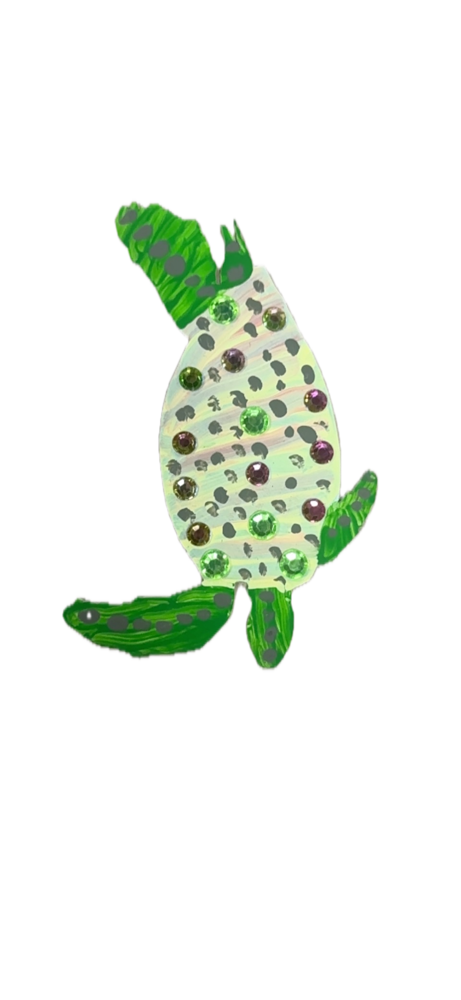
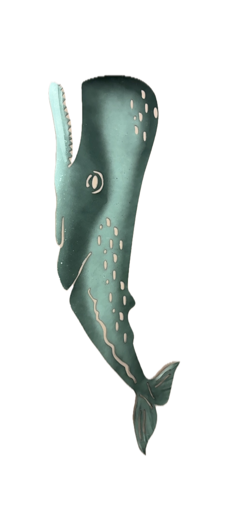
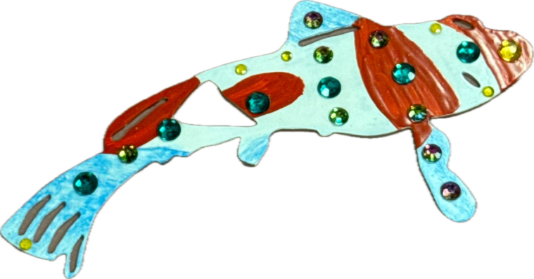
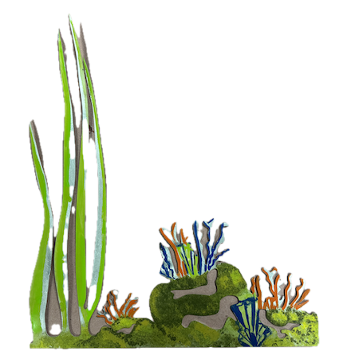
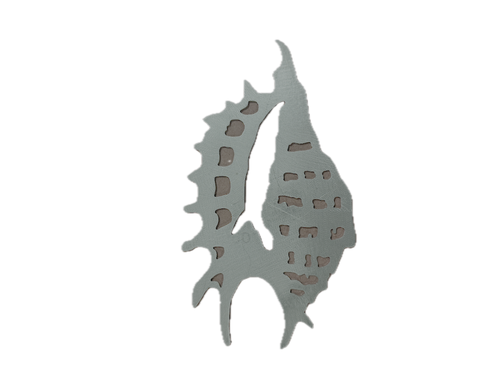
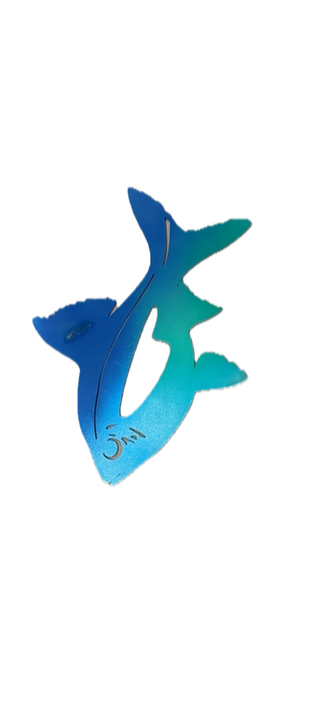

Shade Structures
An integrated solar canopy, vertical trellis, and water medallion system designed to cool Water Alley, provide renewable energy, and improve pedestrian comfort.
Prototype tested in a digital twin using real sun data and spatial measurements from Alley 3.
Open Alley 3 Digital TwinA.Existing Conditions
Exposed asphalt corridor / no shade or infrastructure
Water Alley is a 300-foot service corridor with exposed asphalt that absorbs and radiates heat, reaching ground temperatures over 120°F in summer. The space has no shade, greenery, or infrastructure for community use.
B.Intervention Description
Integrated shade system in Alley 3 / solar canopy + trellises + medallions
Concept reference (prototype design)
This intervention installs an integrated overhead structure spanning Water Alley's full length. Three buildable components share structural supports and work together as a unified system.
C.System Components
Overhead Solar Canopy
Tensile fabric with integrated PV panels, 12-15 ft above ground. Provides 85% shade and generates 5kW solar power.
Vertical Trellises
Wall-mounted steel panels supporting native climbing plants. Creates living green walls without consuming ground space.
Water Medallions
Decorative marine life medallions on posts and walls. Creates visual landmarks and reinforces Water Alley identity.
D.Digital Twin Behavior
Shade structures were evaluated for shadow casting, material rendering, and thermal performance in the Alley 3 digital twin.
Before: Exposed corridor
After: Shade system active
- Shadow casting: Accurate shadows based on LA sun position data
- Material rendering: Semi-transparent fabric panels and steel frames
- Plant growth: Trellis vegetation at various growth stages
- Medallion placement: Water-themed elements at eye level
E.Prototype Impact
F.Visual Identity Elements
Water-themed medallions mounted on shade structure posts reinforce the Water Alley identity.







See Solar Shades in Context
Explore how solar shades integrate with the other interventions in the Water Alley Digital Twin.